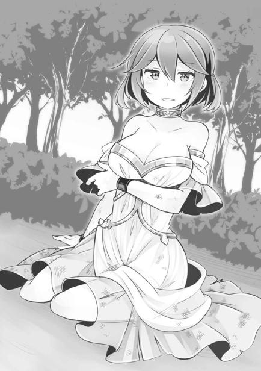
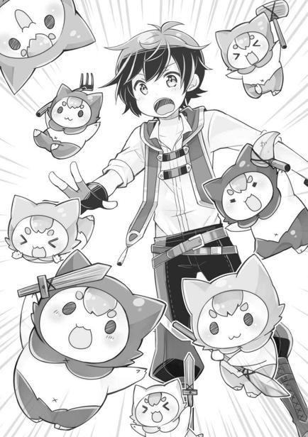

第三章
「どこまで行っても見渡す限りの水平線……。開拓村がなかったら島からの脱出は無理だったな、これは」
俺とアビスが島から旅立ち、すでに八日が経過していた。
未だ陸地は見えず３６０度すべてが海。なんの目印もない航海のまっただ中である。
動力は戦士君が持つオールと麻布で作った帆。海流から脱出する際には、帆にアビスの風魔法を当てて強引に推進力を得たりもした。
イカダは日差しを防ぐ為の小屋がある程度の質素なものだが、幸い分解したり転覆したりすることもなく、ここまで無事な船旅が続いている。
「マスタ、この速度ならあと三日で一番近い陸地に出るよ」
アビスのナビゲートのおかげでペースがわかり安心だ。
「天気だけ心配だったけど、これなら乗り切れそうだな」
「島のほうは少し心配……。カエデだいじょうぶかな」
「食料は十分あるし、戦士君もレンも置いてきたから大丈夫だろう。トモダチもいるし」
今回の旅には、カエデとレンを連れて来なかった。
理由は単純。身軽でないと、どういう危険があるかわからなかったからだ。例えば、万が一、嵐や高波に襲われた場合、全員を開拓村に連れていくのは難しい。
だから今は俺とアビスの二人旅。
戦士君たちも連れてきているけど、彼らはノーカンでいいだろう。海に一時間以上潜っても平気だったし、泳いで島まで戻れそうだ。
「しかしアビスは有能だなぁ。おかげでこうして不安なく航海できてる」
「地図が頭に入ってただけだから……。代わりに戦闘の知識が抜けてるし……」
謙遜を見せるアビスだが、今回の航海に踏み切れたのはアビスの能力のおかげだった。戦闘用の人造人間であるアビスには、世界の地図が頭に入っていたのだ。地図はあくまで地形のみで、街の場所などはわからないらしいのだが、島や大陸の位置がわかるだけで十分過ぎる。おかげで羅針盤もなしに最短距離で陸地を目指せているのだから。
なぜ地図を？とも思ったが、戦闘において地形の把握が重要だからなのだろう。
ただ、本人によると、本来備わっているべき「戦い方」の知識が空っぽで、戦闘用なのに魔法を撃つくらいしか戦い方を知らない事が、コンプレックスなのだとか。
「戦闘だけなら、私よりもレンのほうが強い」
「あいつ容赦ないからなぁ……」
レンは教えられたわけでもないくせに、殺すことに躊躇がない。動きも野性味があってシンプルにパワーとスピードがある。自称魔導師のくせに、呪文を唱えたりもせず、炎をまとった拳でぶん殴るわ、口から炎を吐くわでやりたい放題。実際、島のモンスターのほとんどはアビスではなくレンが狩ったほどなのだ。
そんなレンも島でお留守番をしている。カエデの世話をできるのが、消去法でレンしかいなかったからなのだが、これがゴネにゴネて結構苦労した。
まあ、気持ちはわからなくもない。レンはまだ生後一歳程度だし寂しいのだろう。誰だってお留守番は嫌だ。
その点、カエデは大人というか理解が早くて助かった。自分の能力で「仮初の命」を得た人形といっしょに遊ぶ姿は、顔は笑っていても瞳はどこか空虚で心配になってくるのだが、俺たちの旅立ちも笑顔で送り出してくれた。もしかすると、俺が彼女の両親を探してくることを期待したのかもしれないが……。
家族のところに帰りたいと願うカエデを幸せにできるのかわからないが、できる限りのことはしてやりたい。カエデの両親はもちろん探すつもりだが……。
「ま、とにかく必要なものを手に入れたら、一度島に戻ろう。街さえ見つかればなんとかなるだろうから」
「うんっ！」
考えなければならないことは沢山あるけど、今は一個ずつ確実にやっていこう。
◇◆◆◆◇
「お、おー！ 見えた！ 見えてきたぞ。陸が！」
「うん。地形図通りだね」
島から出て十一日目。ついにイカダは陸地に辿り着いた。
水平線の彼方に薄らと、陸が見えてきた時の感動はなんとも言えないもので、思わず歓声をあげてしまった。長い砂浜がどこまでも続いている。人の姿はなく、船なども見当たらない。残念ながら人間の生活圏内ではないようだが、イカダで上陸するのを見られて変に目立つよりは良かったかもしれない。
「いやー、身体がバッキバキだ。イカダでの長旅はさすがにちょっとこたえる」
「運動、ほとんどできなかったもんね」
豪華客船ほどでなくてもいいが、次があるならもっとちゃんとした船を作ろうと心に誓う。寝室用に小屋を作ってあったし、開拓村のおかげで食料と水に困らないとはいえ、キツいものはキツいのだ。開拓村から戻る際に座標がズレて海上に出てしまったりするから、村でゆっくりすることすらままならなかったし。忍耐力は鍛えられた気がするが。
戦士君たちと一緒に必死でオールを漕ぎ、イカダごと浜に乗り上げる。イカダは使い捨てになるが、いちおう浜に上げて隠しておいた。
「さて、アビス。大きめの川は近くにありそう？ 街があるならそっちのほうだろうから」
「ちょっと離れてるけど、あっち」
アビスが浜の左側を指さす。海沿いに歩けば川までは辿り着くだろう。
街があるかどうかは……まあ、半分は運だ。ひょっとすると俺の故郷であるラベルダ王国に到着という可能性もなくはないが──
「せめて、俺も世界地図でも見て知ってたらなぁ。自分が育った街がどこにあるかもわからないとは……」
一度親父に地図をねだったことがあったが、手に入れることはできなかった。よく考えたら地図は高度な軍事機密にもなりうると前世のテレビで聞いた記憶がある。アビスの脳内に地図が入っているのも、その関係なのだろう。
アビスによると、俺が捨てられたあの島は周囲を三つの大陸に囲まれた、海の真ん中あたりにあるのだという。絵に描いてもらったら本当に絶海の孤島で笑ってしまった。見事なほどに海のド真ん中。都合の悪いものを捨てるのに丁度良かったのだろうか。
「地道にさがそ？」
「うん、そうだな」
こうして陸地に立つと、どうしても家族のことを思い出す。親父も妹も元気にやっているだろうか。
（でも旅を繰り返していれば、いずれは辿り着くはず）
それは今回の船旅で確信できたことだ。海を甘くみるつもりはないが、ラベルダ王国がどこかに存在している以上、いつか巡り会う時が来るはずなのだ。
砂浜から、陸のほうへ上がっていく。
陸地には手付かずの草原が広がり、人の姿は見当たらない。整備された道らしきものもないが、さしあたりモンスターの姿もないし、背の低い草原地帯で歩きやすいのが救いだ。
「川までどれくらい距離ありそう？」
「普通に歩いて──三日くらいかかるかも」
「三日……。早く街に行きたいし、少し急ごうか。みんな大丈夫？」
「オサ！」
思ったより距離があるが、船旅と比べれば幾分か快適だろう。
二日間歩き、ようやく畑や海辺の小屋など人の生活の気配が見えてきた。
この二日間、移動しながら考えたが、街に入るに当たってある程度自分自身の出自や目的などを隠す必要がありそうだった。目的の物を手に入れる為には、どうにかして金を手に入れなきゃならないが、身分証明もなにもない子どもが二人ではうまくいかないだろうし、特にアビスの見た目は問題だ。
「まず……アビスは大人の姿でずっといられる？」
「だいじょうぶ」
「じゃあ、街にいる間はずっとその姿のままでね。あと、角と髪はこれで隠して」
俺はこの日の為に用意してあった、ネコ耳フード付きのマントをアビスに手渡した。
アビスはファーレー教の悪魔と同じ容姿をしているから、なにも隠さずに街に行くのは危険だ。場合によっては大騒ぎになってしまうだろう。
白髪くらいならセーフだろうが、さすがに角だけは死守しないと言い訳もできない。
そして、アビスが大人モードでいれば、子どもが二人という問題も解決だ。
「……どうかな」
フード付きマントをかぶったアビスが両手を広げて、クルッとその場で一回転する。
大人の姿で、そんな可愛い仕草をするのは反則だよ！
「いいね。似合うよ」
つとめて冷静に感想を述べた。可愛い子がフード付きの服着て、顔が見え隠れしてるのって、なんかいいよね。
「マスタも、いつもと違うね」
「パッツンパッツンだけどな……」
俺は、エネルに預けてあった二年前に儀式で着た服に着替えていた。俺もこの二年で成長したのか、さすがに一部はキツくて入らなかったので直した。動物の骨を針にして手探りで直したので下手くそな出来だが、普段の麻でできた服よりはよほどマシな見た目になっただろう。
「アビスは俺のボディガード。そして俺はどっかの大商家のボンボン。この設定でいくからね。基本的には後ろで静かにしてればいいから」
街に入ってからの設定をアビスに教えておく。ボンボンにしてはツギハギの服でみすぼらしいが、そこを突っ込んでくる人はいないと信じる他にない。
「あとは、もうモンスターなんかも出ないだろうし、戦士君たちは村で待機していて」
「オサ！」
さすがに戦士君がなにものなのかを人に説明するのは難しいだろう。エネルに預けておけるので、全員村に移動してもらう。ここからは俺とアビスの二人になる。
「これでいいかな。行こうか」
「うん、マスタ」
しばらく歩くと、だんだん人間がいる痕跡が増えてきた。この感じなら川沿いには街がある可能性が高い。
「街も近そうだし、そろそろ商品を出しておこうか」
「もう出すの？」
「さすがに出すところを人に見られるわけにはいかないからね」
今回、街でいろいろな物を手に入れたいが、そのためには金が必要になる。その金を稼ぐ方法としては、やはり開拓村で手に入るものを売るのが効率的だろう。設定的にも商人ということにするつもりなのだし、商品は必要だ。
周りに人がいないことを確認して、俺は開拓村に入り商品の準備を始めた。
開拓村に投入する品を手に入れる為には、かなりの大金が必要になる。
となれば、商品はそれなりの量があったほうがいい。まだ開拓村は自給自足の農村でしかないが、売れるものはたくさんある。量で勝負だ。
商品の目玉となるのは、なんといっても生きた水牛だろう。労働力としても、食料としても有用。メスなら乳も出るし、ツガイなら増やすことだってできる。健康状態だってバッチリだし、開拓村産は品質にも差がなくハズレの生体が存在しない。
さらに、農産物の数々。イモや豆はたいした金額にはならないかもだが、フルーツは案外高く売れるのではないかと思っている。あれだけ美味しいフルーツは俺の故郷にもなかったし、高い金を出す人もいるだろう。
あとは塩。塩はそれなりに高価なものだったはずで、売れなかったとしても自分たちで使えるので持ってきてある。
これは炎魔法が得意なレンが、磯の潮溜まりで海水を炎魔法で熱して作ってくれたもので、麻袋一杯ある。多分、３キロくらいはあるだろう。
そんな商品を、村人が編んで作ったカゴ一杯に詰め込み、これまた村人が作った荷車の上に乗せ、その荷車を商品である水牛が牽く。豪華！開拓村セットの完成だ。
これをまるごと売れば、相当な金額になるはず。さしあたり開拓村で欲しいものは一通り手に入る程度の金にはなってもらいたい。
ただ、荷車を取り出してからの行程は、かなりスローペースになった。文字通りの牛歩だ。まあ、アビスによると、あと数時間で川に出るという話なので、焦らず行こう。
◇◆◆◆◇
「マスタ。人の声」
しばらく歩いていると、アビスが突然口を開いた。
「ん、どこ？ 全然わかんなかった」
「あっち」
アビスが数百メートル向こうの茂みのほうを指さす。
「現地人かな。この辺のこと聞けるかもしれないし、ちょっと行ってみるか」
「うん」
あんまり深く考えず茂みのほうへ歩き出す。少し近づくと俺にも声が聞こえてきた。なにか、男と女が言い争うような声。揉め事だろうか。
息を殺して茂みに分け入り、状況を窺うと、向こうで綺麗な服を着た女性が屈強そうな男たちに取り囲まれていた。
痴話喧嘩とか地元の農家の揉め事とか、そういうちょっとしたトラブルという雰囲気じゃない。女性のほうは切迫した表情で、着ている衣服には傷や乱れがあった。
断片的に聞こえてきた情報を整理すると、どうやらあの女性がどこからか逃げて、男たちが連れ戻しにきた──ということらしい。
「……どうするの？」
アビスが袖をちょいちょいと引っ張ってくる。
関わり合いになるべきか悩ましいところだが──
「危なそうだし助けてから考えるか。アビス、水牛捕まえたときの弱い電撃で男たちを気絶させられる？ あのときよりさらに出力は弱めてね。人間相手では殺しかねないから」
「だいじょうぶ。じゃあやるね」
男たちも女性も茂みに隠れている俺たちに気付いていない。
アビスが俺の命令に従い、躊躇なく魔法を放つ。
連続で放たれた電撃に五名いた男たちは全員まるで反応できず、拍子抜けするほど簡単に地面に倒れ伏した。まあ、普通の人間は不意打ちで放たれる電撃になど反応できるはずがない。万が一にでも魔法使いが混じっていたら厄介だったが、魔法使い＝貴族である世界で、見るからにゴロツキのようなこの男たちが魔法使いであるはずがないのだ。
「な、なんだこれ？ 誰かいるのか!?」
女性は突然のことに呆然としているようだ。自分を追い詰めていた男たちがいきなり電撃を食らって昏倒したのだから当然だろうけど。
俺はアビスと茂みから出て、女性に声をかけた。
「危ないところでしたね」
「……君たちは？ 助けてくれたのか……？」
女性は数歩後ずさり、あからさまに警戒しているようだ。なるべく温和な感じに喋ったほうがいいかもしれない。警戒されるようないわれもないのだし。
「偶然通りかかっただけなんですけどね。声が聞こえたので、つい。……迷惑でしたか？」
「い……いや、そんなことはない。ありがとう、君は魔法使い……なのか？」
「いえ、魔法使いは僕の護衛のほうで……。申し遅れましたが、僕はある街で商家を営んでいる者で、カイと申します。事情があり、家名は勘弁していただきたい」
カイという名前はかなりありふれたもの（有名な聖人の名前）だが、名字であるハスクバーナまで名乗ると「本来生きていないはず」の自分としては、バレた時に困る。
そうでなくても「訳ありの金持ち」というほうが変な詮索もされにくいだろう。
「そうなのか。……ありがとう、私はサラ・ビアンキ。見ての通りの者だよ」
「見ての通り？」
なにか特徴があるだろうか。
ドレスのような服を着て、赤茶色のショートボブの髪型も手入れが行き届いている。年齢は俺より年上だろうが、ギリギリ十代だろう。
切れ長の目は怜悧で、気が強そうな印象はあるが相当な美人だとは思う。それ以外には首に変わったアクセサリーというか、太めのチョーカーを付けているくらいで、特段おかしなところはない。
「……？ わからないのか？ 君は商家の者なのだろう？ これだよ、これ」
サラが首に付けたアクセサリーを指さす。チョーカーというか首輪だ。
アビスも知らない様子だし、俺も見たことがない物だ。
俺がつい首をかしげていると、サラは目を閉じて首を横に振った。
「……いや、知らないならいいんだ。それともわからない振りをしてくれているのか」
実際に知らないのだが、変に詮索するつもりもない。助けたといっても、男たちに顔を見られたわけじゃないから、報復される可能性もない。情報さえ貰えれば十分だ。

「それで、どうするんだ？ 見返りもなく、助けてくれたというわけではないのだろう？ 商人はみな損得で動くものだからな」
「もちろんです。助けたお礼ってことで、僕たちを近くの街まで案内していただけませんか？ 実はこのあたりの事に無知でして、いろいろ教えてもらいたい事もありますし……街の前まででかまいませんので」
地図だけを頼りに知らない街までの行商をしてるのなら、言い訳としては苦しくないだろう。知らない土地のことは地元の人に訊く。普通のことだ。
「案内……？ そんなことでいいのか？」
サラが怪訝な表情を浮かべる。まあ、本人からすれば絶体絶命のところを、助けられたという思いがあるのかもしれないが、俺としてはタダの通りすがりだ。
「行商中でして、地元の情報なども教えていただけると助かりますけど」
「……案内か……街までだよな？ 少し考えさせてくれ」
目を閉じて考え込んでしまった。
考えてみたらゴロツキから逃げていたのに、案内を頼むってのも酷だったかもしれない。島で修羅場潜ってきたから、感覚おかしくなってるのかも。
考え込む様子からして、サラは街から逃げてきたところだったのだろう。ならば出た街まで行くことになるのは、避けたいところだろうか。まあ、たいして距離もなさそうだし無理に頼む必要はない。少しこの辺の情報を得られればそれだけで十分だ。
そう切り出そうとしたのと、サラが瞳を開いたのは同時だった。
「……うん。時間を取らせてすまなかった、街まで案内させてもらうよ。義を欠き、心まで堕してしまうわけにはいかないからな」
なんだか創作なんかの武士みたいだ。キリッとしたところがあるから、こんな言い回しがよく似合う。とにかく脳内会議の結果は案内するほうに傾いたようでなによりだが、本当に大丈夫なのだろうか。悩むということは、それだけの理由があるということだ。
「無理しなくて大丈夫ですよ。逃げる途中だったんでしょう？」
「いや……正直に言ってしまえばね。逃げてはみたものの、行く当てなんてなかったんだよ。だが、君たちに出会うことができた。なら、これも天命なのだろう」
天命か。神様が身近なこの世界では、この言い回しは時々聞く。ちなみに、うちの親父も俺と妹を拾った時は天命だと思ったのだとか。
「そういうことならお願いします。あ、でも姿は隠したほうがいいですか？」
アビスに着せているフード付きマントは予備があるから、顔を隠すくらいなら問題ない。
「姿というか……なにかスカーフのようなものがあったら貸してほしい。首のコレを隠したいからな」
サラが首のアクセサリーに触れながら言う。隠したいなら外せばいいと思うが、あちらにもなにかしらの事情があるらしい。バッグからハンカチ代わりに使おうと思っていた麻布を取り出して渡すと、サラは礼を言ってからそれを首に巻き付けた。
「それで、あの男たちはなんだったんです？」
「あれは商館で雇われたゴロツキだ。荒事だったらなんでもやるような類いの人間だよ」
見た目通りの輩だったらしい。今はまだ昏倒したままピクリとも動かず眠っている。連中が食らったのは水牛でも昏倒するような電撃だ。しばらくは意識を取り戻さないだろう。
「じゃあ、ちょっと装備をもらっといても大丈夫かな」
俺はアビスと共に男たちの身ぐるみを剝いだ。どっちが悪者だかわからない感じだが、地元の人間の身ぐるみを剝げば、いろいろなことがわかる。
（……なるほど）
男たちが持っていた貨幣はすべて硬貨で、デザインは初めて見るものだった。肖像が彫り込まれた銀貨と、文字だけが刻まれた銅貨で、紙幣や金貨は持っていなかった。
街への入場証のようなものも持っていなかったので、街の出入りはおそらく自由。
男たちは全員二十代くらいか。古い刀傷がある奴が多いから、サラが言うとおり荒事が専門なのだろう。がっしりとした体格で、ちょっと羨ましいくらいである。
（やった。偶然とはいえ、武器が手に入った）
男たちは全員が武器を携帯していた。鋼のロングソードと短剣が五人分。服も靴も革手袋も銀の装飾品も、開拓村の文明力からすれば、オーバーテクノロジーの宝庫だ。買えばそれなりにするだろうし、無駄にするつもりはない。
「……こうしておけば、意識を取り戻しても、すぐには行動できないでしょう」
俺が容赦なく剝いでいくもんだから、サラが呆気に取られて見ていて、つい言い訳をしてしまった。
◇◆◆◆◇
サラは自分自身のことは話さなかったが、俺のことは特に怪しんだりせず、道案内をしてくれた。荷車まで戻り、街へと向かいながらこの土地の話を聞いてみる。
このあたりは最近ライムリーグ帝国という国の領土になった土地で、これから向かうスコルパの街は古くから港町として賑わってきたのだそうだ。
なんにせよ、大きい街なら商品を売るのは問題ないだろう。商売の経験があるわけじゃないが、欲しいという人がいれば売れるはずだ。それに、万が一売れなかったとしても、それも勉強。最初から何もかも上手くいくなんて思ってはいない。
しばらく歩き、港町スコルパに到着した。街は気持ち程度の外壁に囲まれているが、基本的に開けた街で、港にはいくつもの帆船やボートが停泊しているのが見える。
「おー……。異国情緒あるなぁ」
初めて訪れる「外国」に、つい田舎者っぽく声を上げてしまった。前世では、病気のせいで国内旅行ですらしたことがなかったし、島流しに遭う前も、街の外に出ることはほとんどなかった。そんな俺にとって異世界の知らない街は、なによりも珍しい外国だった。
どこからか漂ってくるスパイスと魚の脂の臭いを、胸一杯に吸い込む。
建築物もレンガ組みが主体だった俺の故郷の街のものと違い、ほとんどが石と木材だけで組まれている。街の中は人でごった返し、水牛が牽く俺の荷車をいろんな人がジロジロと見ていく。
だが、久々に帰ってきた人間の世界に俺は胸が熱くなっていた。あの島に置き去りにされ、一時は死をも覚悟した俺が、人の世界に帰ってくることができたのだ。
アビスも何も喋らずにいるが、キョロキョロとあっちこっちに視線を送り、興味津々の様子。アビスにとっては本当に初めての街なのだから当然だろう。少し不安なのか、俺の服の袖をチョンと摘んでいるのが可愛い。
「カイくん、これからどうするのだ？」
道ばたに立ち止まって完全にお上りさんになってしまった俺にサラが尋ねる。
「そりゃあ決まってます！ メシ食いにいきましょう！ あ、もちろん奢りますよ！」
密かに決めてあったことだ。金なら男たちから巻き上げた分がある。
やっとだ！ やっと、村でとれる食料とは違うものが食べられるのだ！ 実を言えばさっきから腹が鳴って仕方が無かった。
とはいえ、荷車を離れて食堂などに入るのは盗難が怖い。アビスは食事に参加せずに番に立ってくれるかもしれないが、それは可哀想だ。
というわけで、たくさん出ている屋台でいろいろ買ってきてみた。
焼き鳥も、揚げパンも、麵料理も美味しくて、涙が出てきてサラにギョッとされてしまった。エネルにも食べさせてあげたかったが、こんな大通りで能力を発動させるわけにもいかない。せめて味付けに使われていた醬油みたいな調味料は買って帰ってやろう。
食事の後、路傍の魚売りの男に話しかけて、この街で物を売る方法を訊ねた。男によると、街の中心近くにバザールがあるのだという。バザールは常時開催している市場で、場代さえ払えばそこで物を売ることができるのだそうだ。
「じゃあ、僕たちはバザールに行ってみます。サラさんはどうします？」
サラのことは助けたが、街までの約束だった。これ以上付き合ってもらう義理はない。
「……もう少し、付き合わせてもらってもいいだろうか」
サラが布に隠れた首のアクセサリーに触れながら、絞り出すように言う。
「それは構いませんけど……」
行く当てがないらしいし、こんなところで放り出されても困る……ということだろうか。まあ、旅は道連れとか言うし、この街に詳しそうなサラに付き合ってもらえるなら逆に嬉しいけれど。
「……カイ君は、本当にこの首輪のことを知らないんだな」
やけに首輪のことを気にしているサラ。知らないものは知らないというのに。
「装飾品じゃないんですか？」
「装飾品なら、隠さずとも外せば済むことだろう？」
それもそうだ。
でも、思い出の品とか願掛けとかで外さない場合はありえるんじゃないだろうか。
「君は商家の者だと言ったが、ずいぶんと真っ当な商売をする家の者のようだ……。この首輪はね、奴隷の首に嵌めるもので私は逃亡奴隷だ。……最初は無知を装っているのかと疑った私を許して欲しい」
謝られて後ろめたい気持ちになる。無知は本当だが、噓をついているのも事実だから。
それにしても奴隷だったとは。この世界に奴隷制度があるという事は知っていたが、目の前の人がそうだという可能性は考えていなかった。
「大きな商家で魔法使いの奴隷を扱わないところは少ないと思ったのだが……。それに、君の魔法使い──アビスは、これを付けずに君に従っているのか……？」
「マスタに従うのに首輪なんていらない」
アビスが真顔で言う。
「そうか……ずいぶん大人しいから感情を壊されているのかと思っていた……」
感情を壊すって。そんな恐ろしいことが横行してるのか？ この世界。
「この首輪はね、主人が決まるまで魔法使いの能力を封じる力があり、主人が決まったら感情を壊され主人の言うことにすべて従うようになるのさ」
「魔法使い専用ってことですか？ じゃあ、サラさんは魔法使いってこと？」
「そういうことだ。……そんなことも知らずに私を助けてくれたのだな、君は」
「ええ、まあ……」
魔法使いってことは貴族ってことなのか。なるほど、やけに物腰に品があると思った。
「しかし、感情を壊す首輪とは、ずいぶん物騒なものですね。外せないんですか、それ」
「解呪専門の祝福者しか外せないと言われている。私も詳しくは知らないのだが」
ファーレー教十三神のほとんどは名前はおろか能力すら秘匿されている。その中に洗脳が得意な神でもいるに違いない。奴隷の首輪作ってるなんてのは、宗教のイメージから遠く離れた行為だが、元々アラミラの祝福者の島流しなんてことをやる連中だ。なにをやっていても不思議ではない。
それにしても逃亡奴隷だったとは。着の身着のまま逃げてきたのだろうし、こんなとこで俺に放り出されてもなおさら困るよな。
「じゃあ、いっしょに行きましょうか。用事が済んだら僕も国に帰るつもりですし、その首輪を外す方法もそのうち見つかるでしょう」
「い、いいのか……？ だが……」
「まあ、乗りかかった船というやつですね。助けた責任もありますし」
サラのくわしい出自は不明だが、俺たちは島に隠れ住んでいるのだから、行く当てのない女性を一人匿うのなど造作もない。本人が嫌と言えばそこまでだが、状況が状況だ、無人島は絶対にＮＯなんて贅沢は言わない……と思う。半分は希望的観測だが。
いずれにせよ、これからの島の開拓には俺以外にも人間がいたほうがいいのだ。カエデにとってもそうだし、これからまだ送られてくるであろう子どもたちの相手ができる人間だって必要なのだから。
「すまない。恩に着る」
サラは深々と頭を下げた。俺としても悪くない取引だ。
まあ、あとはすべての用事を終えて無事に島に帰れればいいんだが、奴隷商館だって逃げた奴隷を必死に探してるんだろうし、一悶着なければいいけれど。
念の為にサラには、アビスのフード付きマントの予備を着てもらった。これだけでもかなり違うだろうし、そもそも逃げた奴隷が未だに街中にいるとは思わないはずだ。
とはいえ、見つかっても面倒だ。さっさと用事を済ましてしまおう！
◇◆◆◆◇
「すげぇ大金だ……」
夜。俺は売上金を宿のテーブルに並べて唸っていた。
あの後、俺たちは荷車を牽いてバザールに行き、場所代を払って商品を並べた。
市場では価格交渉をするのが普通と聞いていたので、それなりに吹っ掛けたつもりの金額を提示していたのだが、結果としては完売することができた。
特に水牛を欲しがる人が殺到してしまい、即席の競売がスタートしてしまったのが大きかった。なんでも、こんなに立派な牛は見たことがないとかなんとかで、また持ってきて欲しいといろんな人に頼まれてしまったほどだ。
ミカンも試食用にと剝いて食べられるようにしておいたのだが、こんなに甘い果物は初めて食べた！と感動する人が続出して、あっという間に完売。
一度、人が集まったら他の商品にも目が行くからか、塩や豆やイモなんかも買ってくれる人がいて、あれよあれよといううちにすべて売れてしまった。
そして今、俺の手元には金貨と銀貨と銅貨の山がある。
サラによるとちょっとした中古住宅くらい余裕で買えるような金額らしい。まさに、開拓村の能力がすさまじいチートを発揮した瞬間だった。
「マスタ、これで何を買うの？」
まだフードを付けたままのアビスが、硬貨の山を覗き込みながら言う。
宿には俺とアビスとサラの三人。
部屋は一つだ。お金ももったいないし、別々にする意味もない。
「まずは鉄だな。それ以外の金属も手に入れば買うつもり。あとは、馬とか羊とか鶏とか。金額次第だけどね。あと穀類は欠かせないかな。うちには水牛もいるし、できれば種籾を手に入れて稲作を根付かせたいところだな」
これ以外にも欲しいものは多いが、まずは鉄だ。できれば製鉄技術を入れたい。鉄が開拓村のある世界に出回るのと、村で鉄を作れるのとでは全く意味が違う。
物以外では、知識が足りてない部分があるので、本を買うか人に聞くなどして補いたい。石けんの作り方とか、酒の造り方とか、革を綺麗になめす方法とか、服や靴の作り方とか。家の建て方だってよくわからない。前世の知識はもちろんあるが、どれも断片的で「じゃあやってみろ！」で出来るほどの実用性はない。そもそも情報ソースがテレビというものがほとんどなのである。
「カエデのことも心配だし、なるべく早く買い物済ませて帰ろう」
「うん」
「サラさんも、いいですか？ 買い物は付き合う必要ないんで、宿で待っててもらってもいいですし」
「あ、ああ……だが、その……いいのか？ 私のこと、なにも訊かなくて」
おずおずとそんなことを言うサラ。
気が強そうな見た目だが、本当は気が弱いのかもしれない。
「サラさんも、僕たちのことを訊かないじゃないですか」
俺はそう答えた。本人が訊かれたくないなら無理に訊くこともないし、実際、俺以上に訳ありな人間はそういないのだ。
「……そうだな」
サラはそう呟いてしばらく口を閉じ、ジッと俺の目を見た。
前世から今まで女性に免疫がない俺はつい目を逸らしそうになってしまうが、そうしてはいけない気がして、俺もまたジッとサラの瞳を覗き込む。
そうして数秒、先に目を逸らしたのはサラのほうだった。観念したかのように口を開く。
「君の瞳は綺麗だな。……悪かった。私のことを話すよ。ずっと……考えていたんだ、私は本当はどうするべきなのか。どうするのが一番良いのか……」
俺の言い方が責めているように聞こえてしまったのか、謝罪の言葉を口にして俯く。
正直に言えば、奴隷にさせられてしまった人の身の上話は、どうあろうと愉快な話にはならない。だから、本人が話さないのなら、それでもいいと割り切っていた。しかし、本人が話す気になったのなら、聞いておかねばならないだろう。
「どこから話したものかな……。カイくんも私が貴族かそれに類するものだというのは、わかっていたと思うが、お察しの通り貴族だったよ。戦に負け、奴隷になったのさ」
奴隷の首輪は主人が決まったら心を壊すというから、戦に負けたのは最近のはず。ということは、この辺りは戦火が近いのかもしれない。
「君も商人ならば、さすがにモンディアル公国のことは知っているだろう？ 今ではライムリーグ帝国に滅ぼされてしまったが……。私は、そこの近衛魔導師だったのだ」
まずい、モンディアル公国なんて聞いたこともない。ってことは、やはりラベルダ王国とは違う大陸ということか。そもそもライムリーグ帝国のことだって知らなかった。
サラが近衛魔導師だったという事実自体は、特になにも意外性はない。魔法使いは基本的に全員貴族だし、戦力としても特級だ。年齢的には若いが実力に年齢は関係あるまい。
俺は、簡単に相づちだけを打ち、先を促した。
「モンディアル公国が落ちたのは、つい先日のことだ。私たちは城から落ち延びた先に待ち構えていた傭兵団に負け、全員捕らえられてしまったのだ」
「全員ってことは、何人もいたんですね」
「ああ……そうだ。すでに敗戦は決定的だった公国において、我々第三近衛隊は姫君を隣国まで逃がす任務を与えられていたのだ。魔導師は私だけだったが小隊規模での訓練も十分だったし、決して野盗の類いに後れを取るはずはない……そのはずだった」
「それが、近衛隊を破るような強力な傭兵団に運悪くかち合ってしまったと」
「善戦むなしく……ということもないな。敵に強力な魔法使いがいてね。我々は事実として一人も殺されず無力化されたのだ。姫を守らねばならぬ近衛兵が揃っていながら……な。今頃は、姫様も仲間たちも、いつ誰に売られていくのか恐怖に震えているのだろう」
突然、サラが地面に跪き、ゴスンと地面にぶつける勢いで頭を下げた。
「頼むっ！ こんなことを頼む無茶は承知だが、私にはカイくんしか頼る者がいないのだ。姫を……ユーリセシル様を助けては貰えないだろうか……！」
頭を下げたまま、振り絞るような声音で、その願いを口にする。
「助けるったって……。そのお姫様も奴隷にされてるんですか？ お姫様ともなれば、普通はそういうルートにはいかないんじゃ……」
「正規軍に捕まっていればそうだったかもしれないが、私たちが捕まった相手は、奴隷商の私兵でね。そうでなくとも帝国は戦場での略奪を認めている」
奴隷商人が雇っている兵隊の中に強力な魔法使いがいるのか。
サラを助けた時に、その魔法使いがいたら危なかった。もしいたら、あそこで大規模な戦闘に発展していた可能性が高い。そこは運が良かったな。
「このままでは姫は奴隷としてどこかに売られてしまうだろう。本来なら私自身でどうにかするべきなのだが、時間がないんだ……」
モンディアル公国は滅びたと、確かにそう言っていた。つまりこの人は、国がなくなった今でも、そのお姫様に忠誠を誓っているのか。
「もちろん、虫のいい頼みなのはわかっている……。姫の身請けとなれば、相応の金を支払わねばならないだろう。まして姫は祝福者だ……、カイくんは有力な商家の者だというが、それでも右から左に動かせる金額ではあるまい」
なんだか、俺が姫様を身請けする話に発展してきているんですけど！
「あ、あの、さすがに身請けはするつもりないですよ。そんなお金ないですし」
「ああ……そこで、私の出番だ。私を別の奴隷商に売ってくれればいい。私は魔法使いだ。こう言ってはなんだが、姫よりも私のほうが奴隷としての価値は高いはずだ。その金で姫を……また、もしできるなら、私の仲間たちも助けてあげて欲しいんだ」
サラのあまりにも必死な懇願に、俺は頭を忙しなく回転させていた。
状況を整理しよう。
魔法使いの女性は、「魔法使い」を生むことができる文字通り金の卵。だからサラだけが先に買い手が決まったのだろう。しかし、サラは隙を見て逃亡。だが魔法が封じられた状態では遠くまで逃げることもできず、商館の私兵に追い詰められ、俺たちが出会ったあの場面へと繫がる……というわけだ。
元々サラを捕らえていた奴隷商を無視して他所の奴隷商に売る……というのも確かに不可能ではないだろう。魔法使いの女は金の卵なのだから、業界の義理よりも儲けを取るはず。奴隷の売買など、基本は秘密裏に行うものなのだろうし。
そこで得た金を元に、サラのお姫様を助ける……。なるほど一見理にかなっているように見えなくもない。
「……サラさん、僕みたいな出会ったばかりの子どもに、そんなこと頼んでいいんですか？ もし僕が、約束するフリをしてサラさんだけを売り飛ばして、あとは知らん顔したら？」
先に売るということは、そういうことだ。サラがどの程度考えてこの提案をしたのかはわからないが、後先考えてなさすぎ。状況が状況で自暴自棄になっているのだろうか。
「えっ!? あっ……考えていなかった、そんなこと……。そ、そんなことするのか？」
「いや、しませんけど」
「お、驚かせないでくれ。君はそんなことをしないって信じているから、思いつかなかっただけで……そうだとも、なんにも考えてなかったわけじゃないよ、うん。そうだ」
うんうんと自分を納得させるように頷くサラ。
俺のことを信じてるって、まだ出会ったばかりで助けてメシ奢ったくらいの関係だよ？ 犬かなにかじゃあるまいし、警戒心がなさすぎる。
「とにかくお願いだよ。元々私は奴隷になるところだったんだ。それがこの巡り合わせのおかげで、姫を助けられるなら。最初から私の力不足が原因で招いたことでもあるし……」
俺の脚にすがりつくほどの勢いで懇願してくるサラ。
本人にとってはここが姫を助けられるか否かの分水嶺なのだ。
正直、このお人好しを騙したり放り出すのは簡単だ。元々、なんの関係もない人なのだから、ごめんなさいの一言ですべて片付いてしまう。
（でも、もうそんな真似……できるはずもないよな）
この世界に来て二度も捨てられた。その俺がサラを見捨てられるわけがない。じゃあ頑張ってと放置することなどできないと、最初から俺自身が一番わかっていることだった。
俺はあの島に国を作ると決めたのだ。この程度の頼みも聞けない人間が、そんな大それたことをできるはずがない。それに、おそらく姫と近衛兵を救い出すのは、そう難しくない。俺がこの街に住んでいるならともかく、後先考えなければどうにでもなる。
正直、姫様や他の近衛兵には興味がないが、サラの──このバカで実直な女魔法使いの願いは聞いてあげたかった。
「わかりました。でも……条件があります。二つだけ」
「な、なんだ!? 姫を助けてくれるなら、二つといわずいくらでもいいんだぞ」
「そんな必死にならなくても大丈夫ですよ。条件ってのは、まず一つ『何があっても僕を信じること』」
「そんなこと……信じるに決まっている。そもそも、私は助けてもらえなければ今頃はとっくに奴隷として心を失っていたのだからな」
「では、もう一つ。こっちはとても重要ですよ。……アビス、こっちに来て」
アビスが静かに俺のそばに立つ。サラはなぜアビスが呼ばれたのかわからないだろう。宿に入ってからもアビスはフードを被り、髪と角を隠している。
「じゃあ、アビス。マント脱いでいいよ」
「いいの？」
「そうしなきゃ始まらないからな」
アビスの姿を見せるのは一種の賭けだ。信心深いタイプだったら、その瞬間に大騒ぎして部屋を出て神殿に駆け込むくらいのことをする可能性がある。
だが、仲間になってもらうなら絶対にアビスのことは知ってもらわなければならなかった。アビスの容姿に対して拒否感や嫌悪感がある人間とは仲間になれない。
アビスが特に躊躇することもなくフードを脱ぐ。子どもの姿には戻るなと言ってあったので、まだ大人の姿だ。
「……え!? その髪と、角……？ この子は悪魔なのか？」
サラが驚愕に目を見開く。
「悪魔じゃないですよ。そもそも悪魔ってなんでしたっけ？」
俺はサラにそう訊ねた。
悪魔は神殿が定める神の敵対者だ。白い髪に一対の角を生やした悪魔の軍勢と神の眷属たちとの聖戦が神話の時代にあったという話は、家にあった絵本で何度もルキアに読まされたものだ。恐るべき力を持ち悪逆非道の限りを尽くす悪の軍勢──それが悪魔だという。
正直、だからなんだ？という以上の感想はない。アビスは綺麗で素直でいい子だ。俺にとってはそれがすべてだし、見た目が悪魔と同じ容姿であることで差別的に扱われるというのなら、どこまでも戦うつもりだ。
「いや……私は魔法使いだったから、そのあたりには詳しくなくてな……すまない、悪魔であるはずがないな。こんなに綺麗な顔をしているのに」
どうやらサラはさほど信心深くないタイプだったようだ。
おそらく、魔法使いは単純に戦闘力が一般人とは段違いに強いわけで、想像上の生物である「悪魔」などを怖がったり嫌ったりする必要性がないのかもしれない。
まあ、悪魔なんて宗教上の想像の生物でしかないのだし、同じ見た目の子がいたからって子どもみたいに怖がるほうがおかしいのかも。
「ホッとしましたよ、サラさんがアビスを怖がるなら、僕はあなたを助けることができませんからね。僕にとってはアビスが一番大事なので」
「ピエッ」
隣で静かにしていたアビスが突然変な声をあげた。
「ん？ どうしたのアビス」
「わかんない……なんか熱が出てきたかも」
熱!? ずっと大人の姿でいさせたから不具合が出たのか？
「ねえ、マスタ。もう寝よ？」
「そうするか。なんだかんだ長旅だったし、久々にベッドで寝られるもんな」
人造人間も熱出ることあるのかな？という疑問もあるが、本人が熱っぽいというからには本当なのだろう。なんだかんだ言って、俺もかなり疲れてる。体調を崩す前に休んだほうがいいのだろう。
「というわけで、サラさん。今日はもう寝ましょう。ユーなんとか姫のことはまた明日」
「ユーリセシル姫だ。しかし、頼んでおいてなんだが……そんなに簡単に引き受けてしまってよかったのか……？」
「やると決めたらやりますよ俺は」
この旅はもっとハードな状況も想定して準備してきてある。正直、街を見つけられるかどうかすら難しいだろうと考えていたのだ。街も見つけられたし、金も手に入れた。あとは物を手に入れるだけ。
「まあ、とにかく今日は寝させてもらいます。まだ早いんでサラさんは好きにしててください。お酒とか飲むならお金少し渡しときますよ」
「いや、私もせっかくだから休ませてもらうよ。こんな風にゆっくりできるのは、今日が最後になるのかもしれないからな……」
最後……？ そうか、サラは俺が魔法使いであるサラを奴隷商に売ると思っているのか。
まだ細かい作戦は考えていないが、サラを売るということは絶対にない。その事を伝えておいてもいいのだが、サラのように実直なタイプは噓が下手そうだ。可哀想だけど、本人には秘密にしておこう。敵を欺くにはまず味方からと言うからな。
「ねえ、ねえ、マスタ。はやく寝よう？」
「ヤケに急かすな、アビス。体調悪いなら先に寝ていても大丈夫だよ」
見た感じいつもと同じで、体調が悪い雰囲気はないのだが、人造人間だし思いもよらないなにかがあるのかも。ちょっと心配だな。
「ううん。なんかね、身体が熱っぽいの。……マスタといっしょに寝たら治るような気がするんだ。だから……ね。おねがい」
アビスの吐息が心なしか荒いような気がする。本格的に熱があるのだろうか？ 額に手を当ててみても、特に体温が高いという感じはない。
アビスには俺が風邪で死にそうなときに温めてもらった恩がある。ついに俺が温め返すという番が来たというのか。まあ、今までもずっと一緒に寝てるのだが。
俺はベッドに横になった。もう時刻は夕暮れ時、燭台だけが部屋を照らしている。
そこにアビスがいつものように添い寝して、いつも以上に抱きついてくる。いつもとは違うアビスの身体の柔らかさに、俺は反射的に離れてしまいベッドから転げ落ちた。
（そういや、今日は大人の姿だった……！ この状態のアビスと一緒に寝るだって……？）
いつもの子ども形態の時とは、何もかもが違う。
俺だってもう十四歳、肉体的に大人になりかけ、精神的には言わずもがなだ。
かといって、サラがいるのにフォームチェンジさせるわけにもいかないか？
悪魔ではないと納得はしてくれたようだが、さすがに人造人間であることを説明するのは難しいだろうか。いや、魔法で姿を変えているといえばなんとかなるか。
「おい、アビス──」
「マスタ、なんでいやがるの？」
お子様モードに戻ってもらおうとしたら、遮られてしまった。
素直に悲しい顔を見せるアビス。大人の姿でいろと言ったのは俺だ。アビスには俺がなぜベッドから転げ落ちたのか理解できないだろう。これで、いつもの姿に戻れと言えば、俺は大人モードのアビスが嫌いなのだと勘違いさせてしまうだろう。
不安げに揺れるアビスの金色の瞳を見て、俺は観念した。
もぞもぞとベッドに入ると、アビスがパッと瞳を輝かせ、嬉々として抱きついてくる。柔らかくて温かくて、少しいい匂いがして、変な気持ちになってしまいそうになるけれど、アビスにそういう意図はないだろう。
その様子を見ていたサラまでもが、「え、えっと。私も奴隷にされちゃえば遅かれ早かれだし」とかなんとか言ってベッドの反対側に入ってくる。
俺にできるのは、さっさと意識を手放すことだけだった。
◇◆◆◆◇
次の日、目を覚ますとすぐ隣でサラが眠っていて、アビスは俺にしがみついたままだった。アビスの目はパッチリ開いていて、すぐさま「おはようマスタ」と声を掛けてくれる。
すでに薄々感付いてはいたが、アビスはたぶんいつもほとんど眠っていない。俺が夜中に目覚めても、大抵は目が開いている。俺が起きるのと同時に目覚めているという可能性もあるけど……。
窓の外はまだ薄暗い。島での長いサバイバル生活で、日の出と共に目覚めるのが習慣となっていた。俺はサラを起こさないようにベッドから出て、椅子に腰掛けた。
サラの頼みを聞くと決めた以上、作戦を考えなければならなかった。
状況を整理し、作戦を決めてアビスに役割を伝えたころに、サラが目を覚ました。
「おはようございます、サラさん。よく寝られたみたいですね」
「ああ、おはよう。おかげで久しぶりに熟睡できたよ……国が戦渦に見舞われてからは、ゆっくり眠るどころではなかったからな」
戦争に突入して、かなりの長さに渡ってストレスフルな生活が続いたのだろう。サラは昨日よりはるかにすっきりした表情を浮かべていた。
俺たちは宿で出された軽い朝食を食べ、外に出た。
「それでどうするんだ？ 売られていく身とはいえ、私にも心の準備というものがある」
「ええ、まずは先にこっちの買い物をさせてください。お姫様たちはその後に」
作戦は夕方の予定だ。それまでに、自分の用事を済ましておく必要がある。
昨日、商品を売りさばいた場所──バザールへ訪れた。
ついこの間まで近くで戦争をやっていたという話だが、バザールは普通に品物であふれている。ここならば、欲しいものがある程度は手に入るだろう。
「アビスも欲しいものあったら言ってね」
「うん」
のんびりとバザールを歩いて、商品をチェックしていく。売っている物、値段、品質。店主とも言葉を交わして、情報を得ていく。無限に金があるわけではないから、ちゃんと吟味しなければ。必要なものを必要な分だけ手に入れたい。
「マスタ、どれ買うの？」
「いくつかは決まったよ。鉄はできれば鉄鉱石が欲しかったけど、さすがにそれは置いてないみたい。鉄は製品になっているのを買っていく他ないだろうな」
さすがに鉄鉱石なんかバザールで扱う品目とならないらしく見つからなかった。考えてみたら当然で製鉄にはそれなりに高度な技術を要する。となれば国の基幹事業という位置付けだろうし、鉄鉱石の発掘から製鉄までを一貫して行っていると見るのが妥当だ。
情報収集したところ、鉄は内陸部にある大鉱床から発掘されて精製されているという。
「サラさんの国では、鉄ってどこから手に入れてたんですか？」
鉄は国を作る基礎だ。すべてを輸入に頼っていたということもないだろう。多分。
「鉄……？ すまない、私はそういうのは全然疎くてな。近衛隊になら知っている者もいるかもしれないが……」
知らないか。鉄をどうしてるかなんて、武官であるサラは知る必要がなかったのだろう。近衛兵さんたちもそうだろうから期待は薄い。お姫様に期待するしかないが、若い姫君がどの程度国政に近いところにいるのかはわからない。全くなにも知らない可能性もあるし、いろいろ知っている可能性もある。いずれにせよ、今ここにいないのでは仕方がないが。
俺は、とにかく手に入る物の中で「開拓村」の開拓に役立ちそうな品を選んで購入していった。荷車は売らずに取っておいたので、それにボンボン積んでいく。
鉄で出来た製品を最優先で購入。料理用のナイフや、釣り針、農具、斧、金槌にノミ、釘やノコギリ。開拓村のことがなかったとしても、道具として必要なものばかりだ。
穀類は、残念ながら米は手に入らず小麦のみを大きめの麻袋一杯分。米作を根付かせたかったが仕方が無い。まあ小麦が始まるだけでも大分違う。パンも食べられるようになるし、麵類もいけるようになる。
野菜は、タマネギ、ニンニク、ネギ、カブ、マッシュルーム、からし菜。種で手に入るものは種も買っておいた。これだけあれば料理のバリエーションは激増するはずだ。
果物はブドウを何房か購入した。ブドウがあればワインが作れる。ビールやウイスキーの作り方は知らないが、ワインの作り方は簡単だったはずだ。勢いで中古の樽も購入しておいた。自分では料理法はわからないが、香草類なども仕入れてみた。
さらに砂糖が売っていたのでこれも買ったが、やけに高くて少ししか買えなかった。砂糖もできれば村で作れたらいいのだが、この量では難しそうだ。
生き物も購入した。羊を二頭、大型犬を二頭、山羊を二頭。鶏を二羽。
犬は荷車牽きも出来るし、牧羊犬としての働きも期待できる。
羊は肉よりも羊毛の為だ。鶏は肉も食べられるし、なにより卵を産む。
馬も手に入れたかったが、さすがに高すぎた。というか家畜自体が高く、それだけで八割の金がなくなったほどだ。あと、ここには豚は売っていなかった。
開拓村に足りない物という観点で市場を巡ると、事実上開拓村にはないものだらけであれもこれも、欲しいものだらけで正直困ってしまった。
綿花もそのままの状態で売っていたので一袋買った。栽培にまで発展するかはわからないが、綿があるだけで生活の質は向上するだろう。羊毛が加わればさらに充実するはずだ。
最後は生活雑貨の店で、石けんと香油を大人買いした。
更にすべての買い物を終えてから、雑貨屋で顔を隠せる仮面のようなものを手に入れた。これはこの後に必要になる物。
買い物が終わったら、サラの頼みを聞く番なのだ。
「じゃあちょっと荷物預けてくるので、サラさんは待っていてください」
さすがに大荷物を開拓村に収納する場面を見られるわけにもいかず、いったん別れることにした。このスコルパの街は、古い街のようで建物がかなり入り組んでおり、太い道や細い道も縦横無尽に走っている。俺は目的地があるかのように移動し、周りに人がいないタイミングで荷車ごと荷物をすべて開拓村へ移動させた。
移動後の開拓村で、そのあまりの量にエネルが泡を吹いて失神してしまったから、レベルアップはまた次の機会だろう。これだけの量を一気に持ち込めば、開拓村は今までの比にならないほど大きくなるはずだ。なにより、村人たちの生活がグッと良くなるだろう。
怪しい仮面を装着してサラのところに戻ると、サラはしゃがみ込み捨てられた子どものように小さくなっていた。
「サラさん大丈夫ですか？」
思わず声を掛ける。体調でも悪くしたのだろうか。
「……あ、よかった。戻ってきてくれたんだな」
顔を上げ、心底ホッとした表情で、そんなことを言う。
「そりゃあ、荷物置いてきただけですし……」
「私は、もしかしたら置いて行かれたのかと思って……。面倒なことを君に頼んでいる自覚もあるし……。すまない、元々私はこんな弱い女じゃないんだが、やはり故郷もなにもかもを失ったことで心が弱くなってしまっていたようだ。……君たちが行ってしまい、立っていられないほど心細くなってしまった」
サラは気丈に振る舞っているが、まだ娘と言っていいような歳のはず。魔法使いとしてチヤホヤされて育ってきたのだろうし、こんな状況で強くいられる方がおかしいのかも。
「まあ、とにかく準備できましたから。行きましょう」
「あ、ああ。そうだな。短い間だったが楽しかった。……姫のことよろしく頼んだよ。ワガママで困らせることはないと思うが、もう国はないんだ、少しは厳しくしてやってもいい。あの子はちょうど君と同じくらいの歳だし、仲良くしてくれると私も安心できる」
堰を切ったようにしゃべり出すサラ。サラはこれから自分が奴隷として売られると考えているのだ。
「ねえ、サラさん。ちょっと疑問なんですけど、僕たちが帰ってこないこと、そんなに心配だったんですか？ 帰ってこなければ奴隷として売られることもないのに？」
「売られるのは怖くないよ。元々、覚悟はとっくに出来てたんだ。私が怖いのは姫が奴隷にされて、酷い目に遭うことのほうだよ。あの子は、ユーリは私の妹のようなものだから」
ふと、サラの目がやさしく細められる。
その姿は慈愛に満ちていて、俺はサラの本当の気持ちが見えた気がした。
俺にも妹がいる。ルキアがもし奴隷にされるとなったらどうするだろうか。サラと同じように自分を犠牲にしてでも助けたいと思うはずだ。
「任せてください。必ず助けましょう」
俺は無意識にそう口に出していた。妹だってんなら助ける以外にない。
サラに案内してもらい、お姫様たちが捕まっているという奴隷商館までやって来た。
いちおうサラは別の商館で売る……ということになっているが、サラを売って金を得た後に姫の居場所を俺が知らなければ、助けるもなにもないからだ。
店の前に武器を携帯した男が二人。商館が雇っている私兵だろう。
「かなり大きい店ですね。奴隷の待遇ってどんなもんなんですか？ 商品だから、けっこう大事にされていたり？」
「必要以上に丁寧に扱われたりはしていなかったが、手酷いということはなかったな。私は落ちぶれても元貴族だし、特別扱いだったのかもしれんが」
人間を商品扱いすることの是非はともかく、健康で若く元々の地位も高いとなれば、当然高級奴隷ということになるのだろう。
まして、本物のお姫様。それを買う……となれば、一筋縄ではいくまい。すでに親しい大金持ちに売る約束くらいはしているかもしれない。そうだとしたら、ただ見せてもらうだけでも難しいと考えておいたほうがいいだろう。
やはり、サラの協力を得て一芝居打つ必要がありそうだ。
突入前に自分の服装を見る。二年前の祝福の儀式の時に着た服を手直ししたもので、十分に高級感がある。貴族や豪商の息子として通用するかは、多少の不安があるが、豪商の息子が全員同じ格好をしてるわけでもないだろう。
あとは予定通りに事が運ぶよう上手くやるだけだ。
「じゃあ、アビス。作戦はわかっているね？」
「問題ないよ、マスタ」
「じゃあ、行こうか。サラさんもいっしょに」
「え、えええ？ 他の商館に行くんじゃなかったのか!?」
「大丈夫。すべて任せてください。あ、商館の中ではしばらく喋らないように」
俺は一つだけ注意事項を言い渡し、戸惑うサラを無視して商館の扉を開けた。
（今から俺は貴族だ。大金持ちで気分屋で、傲岸不遜で生意気な貴族のボンボンなのだ）
俺の能力とアビスが揃えば、今回の作戦はそう難しくはないはずだ。
「これはこれは、いらっしゃいませ、本日は奴隷のお求めで？」
すぐに出てきて、俺のようなガキにも慇懃な態度で応対してくれる番頭。いや、逆に俺のようなガキだからこそ、狙い目の客なのかもしれない。
商館の中の見えるところに私兵の姿は見えないが、いないということはないだろう。今回の作戦は商館の私兵……つまり傭兵たちの動きが鍵となる。できれば居場所を把握しておきたい。特に、サラを倒したという魔法使いは要注意だ。
「そうだが、店主はいるか？ 呼んできてもらえるかな？」
「かしこまりました。少々お待ちください」
スッと一礼して去って行く番頭。奴隷の値段のことはよく知らないが、安い物ではないだろうから、客は王族貴族豪商なんかばかりなのだろう。礼儀ができているのも当然か。
しばらくして、小太りの中年がノシノシとやってきた。シンプルな青いシャツを着て、サスペンダーでズボンを吊っている、なかなか貫禄のある男だ。
「いらっしゃいませ、お客様。モリーニ商会へようこそ。私が店主のモリーニです」
太った体を左右に揺らしながら、にこやかに握手を求めてくる。一見、フレンドリーだが、目の奥にはこちらを品定めするような油断の無さが見て取れた。サラの話では、この男が雇っている傭兵団にやられたというから、それだけの私兵を束ねるだけの力を持った男なのだ。一筋縄ではいくまい。
「私は、とある小国の者でね。今はお忍びの旅の最中なので、こんななりなのを許してほしい。実は旅の途中で、こちらから逃げ出したという奴隷を捕まえたのでね、立ち寄らせてもらったのだ。おい」
アビスに向けて顎をしゃくると、アビスは一つ頷いてサラのフードを外して、前にドンと押し出した。サラの表情に驚愕の色が浮かぶ。
「おっ！ おお！ まさか！ 連れてきて下さったんですか！ 信じられない！ こちらの不手際で逃げられてしまい、大損になるところだったのですよ！」
サラの顔と首輪を見て、大興奮の店主。また手を握られてぶんぶんと振られてしまった。
「報奨金は弾んで貰えるんだろうね？」
「当然ですとも！ しかし、どうしてわざわざ連れてきて下すったんで？ 他の商館へ売りつけることもできたはずでは？」
当の商館からしても、そういう認識なのか。ならば、喜ぶのも当然だな。
サラのように美人の魔法使いとなれば、この商館にいるすべての奴隷と交換したとしてもおつりが来るほどの価値があるのだろう。それは、この世界の貴族を貴族たらしめている要素が、「魔法使い」であるからなのだ。魔法使いの母親からは必ず魔法使いの子どもができる。つまり、サラを買った人間は、サラに自分の子どもを産ませれば、その子を貴族として取り立ててもらうことが可能。そうなれば、自分自身も貴族になることができるのだ。
ならば、俺自身はそれを蹴っても問題ないくらいの金持ちを装わなければならない。
「理由か。ふふ、なんとこの女は自分を売った金で姫を身請けして欲しいと俺に頼んできたのだよ。そこで興味が湧いたのだ。そこまでの忠誠を誓わせる、その姫君にね。いくら金を持っていても、こいつを連れてこなければ、そういう商品は見せてもらえまい？」
「なるほど。そういう事でしたか。怖いお人だ」
「良い奴隷との出会いは一期一会。金があれば手に入るというものではないからな」
偉そうに理由を語ることで、店主を納得させることには成功したようだ。俺の見た目はどれほど偉そうでも十四歳。店主からみれば、微笑ましさすら感じるものかもしれないが、大事なのは信用を得ること。中に入り込むことができなければ、作戦は失敗だ。
「カイくん？ どういうことだ……？ わ、私を引き渡したら、とても姫を買うような金になどならないぞ？ 助けて……くれるんだろう？ そう、言ったよな……？」
サラが俺の服の袖を引っ張りながら、訴えてくる。
店主も黙ってこちらを窺っている。ここで下手な受け答えはできない。
「もちろん、その姫君は買わせてもらうつもりだ」
「な、ならなぜ、他の奴隷商に私を持って行かなかったのだ？ こ、ここではお金も貰えないだろう……？」
「実を言うと、金になど困っていないのでね。それでどうするのが一番か考えたら、お前をここに連れてくれば、姫も助かる、奴隷商も助かる。全員得をするのではないか？」
「だがっ──」
さらに言いたいことがありそうなサラを、アビスが口を手で塞いで黙らせた。モガモガと騒ごうとするが、泥臭く行商してたとかそういう情報は奴隷商に知らせたくない。
あくまで謎の金持ちという路線は崩したくないのだ。
「見苦しいところを見せたな、主人」
「いえいえ、我ら商人の事情まで配慮して頂き、私、感激しております」
「では、せっかくだから、全員見せてもらおうか。なんでも、その姫君の近衛を全部奴隷にしたんだって？ 大儲けじゃないか」
「ええ。しかし、私兵には大金を投じていますからね、そこの魔法使いを失っていたら大損害でしたわ」
「ははは、それはそうだろう。しかし私兵とはね、常時契約しているのか？ 今も？」
傭兵団が今この館にいるかどうか、あるいは近くにいるかどうかは作戦の成否を分ける上で最も重要な情報だった。特に、サラを倒したという魔法使いがいるかどうかで全く作戦の難易度は違ったものになってくる。
「もちろんです。今も奥の部屋で遊んでいますよ」
運悪く私兵は館の中にいるようだ。その場合の作戦も考えてきてあったが、少し難易度は上がる。だが、ここまで来たら遂行する以外にはない。
「ははは、それは金を食うな。これからは逃げられないよう気をつけることだ。……ああ、それと、そこのサラに、姫君と話をさせてやってくれ。今生の別れだからな」
「もちろん構いませんよ。ただ、彼女はもう売り手が決まっていますからな。それが済んだらすぐに出荷準備に移らせていただきますが、よろしいですか？」
「ああ、すぐ済むだろう」
サラを別室に連れて行かれると面倒だったが、これでなんとかなるだろう。店主に俺を疑っている様子はない。というか、まさか全員を金も払わず連れ去ろうとしてるなどとは、思いもしないだろう。
主人が番頭や下男に指示を出す。どうやら全員を広間に集めてくれるようだ。
俺は、ゆったりとソファに腰掛け、メイドが淹れてくれた紅茶を味わった。なかなかいいお茶だ。お茶も仕入れておけば良かったなどと、全然関係ないことを考えてしまう。
商館の主人が連れてきた奴隷はすべて女性だった。みな比較的若くみえる。サラの話では、確か第三近衛兵隊は姫付き兵士ということだったから、若い女性だけで編成されていたのかもしれない。そんな風に考えていたのだが、どうやら最初に連れてこられたのが女性だっただけで、しばらく後に男性奴隷も入ってきた。
一気に部屋が手狭になる。近衛兵がサラも入れて九名。男が二名に女が七名だ。サラ以外、全員の脚に足枷を付けられ自由はない。
「ユーリ様！ みんな！」
サラが叫ぶ。どうやら噂のユーリセシル姫が部屋に入ってきたようだ。
俺は余裕ぶってゆっくりとソファから立ち上がった。部屋にいた全員の視線が俺に集中して、つい少し怯んでしまう。いかんいかん。もっと毅然としていなければ。
（あれが、サラのお姫さんか）
姫であるユーリセシルは確かに美しい少女だった。みな同じような服を着せられているのに、それでも一目でそれとわかる程に。
歳のころはサラが言っていたように俺と同じくらいだろう。長く美しい金髪を垂らしており、つい妹のことを思い出してしまった。
俺はゆっくりとユーリセシルの前まで歩き、不躾にジロジロとなめ回すように、頭のてっぺんから足の先までを確認した。あくまで奴隷の検品に慣れた感じを出さなければならない。俺が見ている間、全員の視線が集中する上に、ユーリセシル自身も真っ直ぐに俺の顔を見ているものだから、変に緊張してしまった。
実際、間近で見たユーリセシルは美しかった。亡国の姫君という言葉がよく似合う、儚げで、しかし芯のある瞳をした美人だ。
サラによると、今は亡きモンディアル公の一粒種で、兄弟などはいないらしい。
「……確かに美しいな。いくらだ？」
ユーリセシルを前に主人へ訊ねる。さっと答えてくれた金額は、それこそぶっ飛んだ価格だった。軽く豪邸が建つような金額だ。
まあ、人間一人、それも王族の価格なのだし、これくらいは普通なのかもしれない。とにかく手が出ないのは確かだが、そういう態度を表に出すわけにはいかない。
「そんなものでいいのか？ ああ、それとも負けてくれたのかな？」
俺がサラを連れてきたことで、値段を勉強してくれている可能性がある。とりあえず安いと言っておいたほうが無難だろう。相場を知らないやつと思われるよりは、とにかく太っ腹な感じを貫いたほうがいい。
「バレてしまいましたか。このユーリセシルはモンディアル公国の宝石とまで言われた、私どもの目玉商品。本来ならば、こんな値段ではお出しできないのですよ。サラを連れてきて下さった、あなた様だからこそ、この価格でお譲りしたいのです」
「そうか。ではありがたく貰っていくとしよう。他の者も何人かついでに貰おう。選んでも構わんな？」
「も、もちろんですとも！」
商人は揉み手で笑顔だ。奴隷はランニングコストがかかる。右から左に売れてくれたほうが良いに決まっている。
俺は他の者をひとりひとり調べ始めた。時間がないので、ここから逃げたいかどうかだけを小声で質問し、それが終わった者たちは手を繫いで向こうにいろと命じる。
長くかかりそうだと思ったからか、あるいは気を利かせたからか、店主が部屋から出て行く。部屋は完全なる密室で窓すらないから、逃げられるとは思いもしないか、あるいはすぐに戻ってくるつもりなのだろう。いずれにせよチャンスだ。
俺はサラを含めた全員にお互いの手を繫がせた。
「予定通りだ。アビスいいな、なるべく派手にやってくれ」
俺の後ろをちょこちょこ着いてきていたアビスに最後の確認をする。
そう、この作戦はアビスが最も危険なのだ。
本当はこのまま全員、島に連行してしまえば簡単なのだが、そうしないのには理由がある。スキルを持っている俺でも、あの島での生活は堪えたというのに、彼らに確認もソコソコに勢いで移住を迫るような真似は絶対にしたくないのだ。そんなことをすれば、俺やカエデを強制連行した異端審問官と同じになってしまうだろう。
さらに、もし全員が島への移動を承諾したとしても、（北）の出口を使った村のワープ機能にも制限がある。俺といっしょでなければ『ゲスト』だけを向こうに送ることはできないのだ。つまり、島に行く時は全員一緒でなければならない。開拓村のワープ機能は一方通行だから、島に戻ったらこちらへ戻ってくるのもほぼ不可能なのだから。
傭兵団が商館内にいないのならば全員で開拓村に隠れて、しばらく後に脱出するという方法もあったが、傭兵が中にいる以上、連中を誰かが引き剝がしてくれなければ逃げることは難しい。だから、その役目をアビスにやってもらう。
アビスがいつものように「うん」と頷くのを確認し、アビスの手だけ繫がず自分の能力を発動した。
『てのひら開拓村！』
瞬時にスキルが発動し、手を繫いだ者たち全員が一斉に村へと移動する。
（うまくやってくれよ、アビス）
俺は心の中で呟いた。
◇◆◆◆◇
カイたちが能力によってその場から姿を消すと、アビスはすぐに行動を開始した。
指示通りなるべく派手にこの館から脱出し、追っ手を引きつけなければならない。そうして、商館の人手が薄くなればなるほど、カイたちの脱出は確実になるのだ。
「……窓、ない」
店主が戻ってくるより先に、全員が逃げたように見せなければならないのだが、さすが奴隷商館だからか、この部屋には窓が一つも存在していなかった。
「……壊せばいっか」
アビスは誰に言うともなく呟き、手のひらで風の魔法を練り、躊躇なく壁に向けて撃ち放った。爆風と共に壁に大穴が空く。
「えっと……すぐ逃げちゃダメだよね」
作戦では、全員が逃げ出して殿がアビスであるように見せかけろということだった。
すぐに逃げてしまったら、追っ手を引きつけることができない。
アビスは、壊れた壁を守るように立ち、状況を見守った。
「な、ななななな何事だ！」
すぐさま、店主が大慌てで部屋に入ってきた。
部屋には誰もおらず、壁は破壊されアビスだけが壁際に立っているのを見て、店主はすぐに状況を悟ったようだった。
「ファウゼル！ ファウゼルを呼べ！ 賊だ！」
ツバを飛ばしながら叫び、人を呼んでいるようだ。ファウゼルというのが、この商館の私兵の頭なのだろう。
アビスが傭兵たちを待っている間にも、何人かの従業員が突っかかって来たが、アビスはすべて電撃で昏倒させた。
「……そろそろいいかな」
カイが言うところによると、相手を誘導しようとしてはダメなのだそうだ。あくまで追われ、逃げているように見えることが大事だと。
少なくとも傭兵団に姿を見られない程度にまでひっぱってから逃げろという事だった。
アビスは壁の穴から外に出て、ゆっくりと走り出した。
「おいおい、こりゃどういうこった？ おやっさん、敵は魔法使いなのか？」
ファウゼルは壁の穴を見て即座にそれが魔法によるものと看破した。風の魔法を壁に打ち込むと、ちょうどこんな風になる。
「わからんが、クソッ！ ガキだと思って油断した。あれはモンディアルの残党だったのだろう。ユーリセシルどころか、まさか全員連れて逃げるとはな」
「ほう、モンディアルの？ こんなことをやる骨のあるやつが残っていたとはねぇ」
ファウゼルが感心したように顎髭をしごく。
先の戦争では、多くの魔法使いと戦ったが、モンディアルの魔法使いは帝国軍のそれと比較して弱かった。魔法使いの魔法威力そのものなど普通は大差ない。大事なのは使う人間のほうだ。戦闘経験のない魔法使いは、砲台としては優秀でも一対一ではファウゼルの敵にはならなかった。
「感心してる場合か！ 追え！ 全員でだ！ わかってるんだろうな、ファウゼル、お前たちには大金を支払ってるんだ。失敗は許さんぞ！」
「奴隷どもは足枷付けられてるんでしょう？ そう遠くへは逃げられませんよ、まあ簡単なウサギ狩りってとこですな。俺だけで十分ですわ」
ファウゼルの気楽な進言に、奴隷商館店主モリーニはいきりたち叫んだ。
「全員でだ！ これは命令だぞ、ファウゼル。先の戦争でユーリセシルを捕らえたのはお手柄だったがな、サラには逃げられ、追っ手も何者かに倒されて二度失敗しているんだ。それでさらにこれだ！ こうして話している間にも、奴らは逃げているんだぞ」
厳密には、ファウゼルに非があるのは、サラを捕まえる為の追っ手を全員アビスに倒されてしまった件だけなのだが、頭に血が上ったモリーニは、すべてファウゼルの失態に勘定した。それだけファウゼルとその子分には金を払っていたし、ここでユーリセシルとサラに逃げられたら、来月には経営すら危なくなるほどの大損害だ。
「ま、命令とあらば仕方がありませんな」
ファウゼルは肩を竦め、すぐさま大声で部下を召集しアビスを追い走り出した。
「…………来た。よかった」
アビスが逃げ出して数分。ようやく追っ手らしき男たちが、後ろから迫ってきた。
「あとは上手く逃げなきゃ」
マントをひるがえし、目抜き通りを走る。わざと追いつかれるようにスピードを落とし、距離が近くなりすぎたら速度を上げて引き離した。
アビスは魔力を肉体の強化にも使えるタイプの魔法使いだ。今も魔力で肉体を強化しており、その気になれば一気に引き離すことも可能なほどだ。
だが、カイたちが先にいるように見せかけながら走るのは、考えるのが苦手なアビスには難しい事だった。
「……うう、魔法撃ってるほうが簡単」
いつまでも続くかと思われた逃走劇だったが、それは唐突に終わりを告げた。
単純に街を出たからだ。街を出てしばらく走ったところで、追ってきていた男たちもアビスが一人きりであることに気付いたらしく、追うのをやめて立ち止まった。
これではカイの頼みを果たせない。
『アビス、できるだけ長く足止めして欲しい。倒してしまっても構わないから』
カイの言葉がアビスの脳内で再生される。
アビスは、走るのをやめると男たちのほうへ歩み寄った。
「ふぅ。もう逃げなくていいのかい？ お嬢ちゃん。奴隷たちはどうしたのかな？」
先頭の男が言う。さすが傭兵ということか、これだけ走ったわりには息も切れていない。さらに、手のひらでいつでも撃てるように魔法を準備しているのが、アビスにはわかった。この男がサラを倒したという魔法使いなのだろう。
「……みんなもう先に行ったよ。あとは私があなたたちを倒せば終わり」
傭兵たちは油断なく、そして少しずつアビスを包囲するように動き始めようとしたが、先頭の男が、それを手で制した。
アビスは余裕の態度を崩さずに、相手の出方を窺った。
「やつらは足枷を付けていたはずだ。そんなに速く逃げられるものかな？」
「あれなら……私が外したから」
実際には外していないのだが、アビスは適当に答えた。どうせ、そんなことはもう関係がない。アビスの仕事は足止め。言葉は必要なく、全員を倒してしまえばそれで終わりだ。
アビスは魔力を活性化させた。早く終わらせて、主の元に戻りたかった。
◇◆◆◆◇
「う、うわわわわわ！ な、なんだここは!? どうして？ なんで？ どこなんだここは！」
俺が、サラ、ユーリセシル、そして近衛隊全員を連れて開拓村に移動した直後。最初に大騒ぎしたのはサラだった。
サラはこの集団の中で唯一の魔法使いだという。つまり、戦力としてはズバ抜けたものを持っているはずなのだが、どうにも本人はポンコツ感が強い。本当に戦えるのか不安になってくるほどだ。
もちろん、近衛兵たちもいきなりの瞬間移動に驚き、ざわついている。
半分腰を抜かしていると言ったほうが正確かもしれない。さっきまで奴隷商館にいたはずなのに、今はのどかな農村の入り口に全員で立っているのだから当然かもしれない。
そんな中、ユーリセシルだけが泰然自若として、全く動じた様子を見せずにいる。さすが王族ということなのか。いや、こんな状況で落ち着き払っているのは逆に不気味だ。
近衛兵たちも、姫の落ち着きぶりを見てか、だんだんと平静さを取り戻していく。
「やあ、カイ！ こないだは大量に物資持ってきてくれたけど、あれどうするんだい？ 村に入れていいなら、レベルアップ間違いなしだけども！」
エネルがバナナ片手にやってくる。俺が街で買った商品は、とりあえずは預けてある状態だ。全量を村に卸してしまうと、流通するまで取り出すことができなくなってしまう。時間があるときに仕分けようと思っていたのだ。
「とりあえず、立て込んでるんで、あれはまた後で。それより預けてた剣を一本持ってきてくれる？」
まず、しばらくは村で待機だ。
その間にみんなの足枷を外さなければならないわけだが、まずは説明からだな。
「サラさん。まず落ち着いて。さっきはすみませんでしたね。演技だったんですが、なかなかのもんだったでしょう？ けっこう無理はしてましたが」
「演技!? 演技だったのか、あれが！ すっかり騙されてしまった！ いや、そんなことはもうどうでもいい！ それより、これは一体どういうことなのだ？ ここはいったい……？ 私たちは奴隷商館にいたはず……だよな？」
「順番に説明していきますよ。他のみなさんも聞いてください」
といって、たいした説明はできないのだが、まず、この能力のことから話した。もちろんアラミラの名は出さず、とある神の祝福ということで納得してもらう。
そして、ここまでやってきた経緯──サラに頼まれて皆を助けに来たことを説明した。
作戦も第一段階は完了だ。このタイミングでサラも含めて全員を助けるつもりだと告げる。どよめきが広がるが、一番驚いたのはやはりサラだった。
「わ、私もっ!? でも、だって……私を売ったお金でって……。え？ あれ……？」
「僕を信じるのが条件だって言ったでしょう？ それを覆すような真似しませんよ」
「でも、だってそれは、姫を助けてくれる条件だったんじゃ……」
「そう誤解させるような言い方をしたのは確かです。でも、サラさんを売って姫様を助けるとも言いませんでしたよ、僕は。もともと、サラさんを助けるつもりだったんですし。僕を信じて、アビスのことを怖がらずにいてくれたじゃないですか。それって、サラさんを助ける条件だったんですよ。お姫様と近衛兵さんたちはオマケです」
サラだけを島に強制連行しても、サラを助けたことにはならない。そんなことをしたら彼女はずっと姫や仲間のことを心配し続けただろう。だから、全員を助けることにした。
もちろん、島では人手はいくらでも欲しいが、奴隷商館から人をかっさらってくるような手段である必要は本来ないのだから。
俺はサラから離れ、皆の足枷をなんとかする作業を始めた。鉄で出来た脚輪に鎖で鉄球が繫がれている。鉄が大量に手に入るのは嬉しいが、こういう形でとは思っていなかった。
エネルが持ってきてくれた剣で鎖を巻き取り拗りを加えていく。
「なにを……しているのですか？」
作業していると、頭上から鈴が鳴るような声が聞こえた。顔を上げると、声の主はユーリセシルだった。こんな状況なのにヤケに落ち着いている。お姫様というのはそういうものなのか。それとも、国が滅び心が死んでいるのかもしれない。部外者である俺にはわからないことだが、両親だって無事では済まなかっただろうし、気丈でいるにも限度というものがあるのではないだろうかと思う。
「細く弱い鎖なら、拗っていけば力に耐えられずに壊れるんですよ。これくらいのなら簡単です」
前世で入院中に映画で見て知った知識だ。剣はボロボロになってしまうが、どうせ傭兵からいただいたもの。一本くらいダメになっても問題ない。
しばらくして鎖は切れた。破断したというのが正確な表現だろうが、とにかくこれで走ることができるだろう。
作業を無言で眺めていたユーリセシルは、特に興味がなかったのか、鎖が切れてもその事には触れずに、別の話を振ってきた。
「カイさん……と言いましたね。今、この不思議なところに連れてきたのも、私たちを助ける為なのでしょう。……しかし、どうして助けて下さるのです……？ あなたはモンディアルに縁がある方なのですか？」
「いえ、サラさんとも昨日知り合ったばかりですよ。モンディアルのことも知りませんでした。だから、助ける理由は……サラさんが気に入ったからってことになりますか」
「なっ!?」
すぐ隣で聞き耳を立てていたらしいサラが、突然素っ頓狂な声を上げた。
「ふふふ、そうでしたか。私はこれで彼女にもう何度助けられたことでしょうね。今では国も民も、なにもかも失った、ただのユーリセシルでしかないのに」
「ああ、それは──」
妹みたいに思ってるらしいですよ、とはさすがに言えなかった。
いくらなんでも、ヤボ過ぎるからね。
全員の足枷を外し終え、開拓村に入ってから一時間程度が経過したころ俺たちは行動を開始した。彼らが今、開拓村にいられるのは開拓村の『ゲスト』の能力のおかげだ。この能力はあくまで俺の客として村に滞在できるというだけで、俺が外に出れば彼らも村から弾き出されてしまう。だから、全員で行動しなければならない。
全員裸足だったので開拓村製の草鞋を用意して履かせ、最低限身を守る為の武器を持たせた。未だ金属の存在しない開拓村では手に入る武器なんて、本当に木の棒に毛が生えた程度のものだが、護身用として最低限の仕事はしてくれるだろう。
「では、みなさん。心の準備はいいですね。とにかく一目散に街の外まで走ってください」
この作戦の為に、わざわざ時間を調整したのだ。
今の時刻は夕暮れ時。逃げるには明るすぎず暗すぎず丁度いい塩梅だろう。
開拓村の外に出ると、一瞬で俺を含む全員が元々いた奴隷商館の一室へと移動した。
喋らないように言ってあったので、誰も驚きの声などをあげたりせず静かにしている。
（さて、いい感じに暗くなっているな。ん？）
「おっ、おまえたち……！ どこから……！」
誰もいないことを期待したのだが、丁度部屋にいたらしい商館の店主が腰を抜かしたように床に尻餅をついていた。傭兵たちはいないようだ。アビスが上手くやってくれたらしい。
「静かに」
店主の首元に短剣を突きつける。店主はコクコクと首だけを動かした。
「サラさん、頼む。急いで」
誰かがいる可能性は考えてあった。いちおう全員に武器になるものを渡してあるが、店主については麻縄で縛っておけば問題ない。
時間に余裕があれば、足枷の鍵や、サラの首輪の鍵を手に入れたかったが、今は逃げることを優先しなければ、いつ傭兵や衛兵がやってくるかわかったものじゃない。
「店主、ユーリセシルとサラの事は諦めろ。元々、火事場泥棒で手に入れたもの。夢でも見ていたと思え」
それだけを店主に告げ、俺は立ち上がった。
壁に大きな穴が開いている。おそらくアビスが魔法で開けたものだ。
俺たちは無言で飛び出し、夕暮れの街を走る──
◇◆◆◆◇
「速く！ 速く！ サラさん、もうユーリセシルさんはおぶったほうが速いですよ！」
「あ、ああ！ ユーリ様、では私の背にお乗りください」
「サラさんじゃ華奢すぎるでしょ！ そっちのマッチョなお兄さんに頼みましょうよ！」
「姫を男の背に乗せるなど！」
「もう姫じゃないでしょうが！」
俺は夕暮れ時のスコルパの街を、十名もの人間と走っていた。
近衛兵たちはさすがに問題なかったが、ユーリセシルはどうにも走るのが遅かった。
強引にマッチョ近衛兵におんぶしてもらい、今はそれなりのペースで逃げられている。とりあえず追っ手もないようだ。
いい感じに日も沈みそろそろ黄昏時だ。外壁を抜けてしまえば、闇に乗じてどうにでも逃げられるだろう。逃げ道についても、本当は路地から路地へと目立ちにくいルートを選ぶべきだったのだが、時間も土地勘もなく結局大通りを走っている。
近衛さんたちの脚に付いたままの鎖が、チャラチャラと音を出し、目立って仕方が無い。そもそも全員一目で奴隷と分かるような服装だ。誰が見たって奴隷の集団脱走である。
さっさと脱出しなければ、衛兵かなにかを呼ばれかねない。
「あっ、てめえら！ こんなとこにいやがったのか！ 止まりやがれ！」
前方から歩いてきた武装した集団の一人が、俺たちを指さし叫んだ。
（傭兵か！ クソッ、こんなタイミングで）
大人しく停まってやる義理はなかったのだが、相手は武器を持っている。しかも、すぐに剣を抜きこちらを包囲しようと動き出した。伊達に傭兵団などやってないということか。
「かっ、カイくんどうするんだ!? 見つかってしまったぞ！」
「ですね。ちょっと待って下さい」
こいつらがここにいるということは、アビスはどうなったのだろう。まさか、負けたのだろうか。無限の魔力を持つアビスが、人間の魔法使いに負けるとは考えにくいが……。
「サラさん、あいつらの中にサラさんを倒した魔法使いはいますか？」
「い……いや。見当たらないな、人数はほとんど全部いるようだが……」
いないか。ちょっと聞いてみるか。
「おいっ！ お前らの中に魔法使いがいただろう！ あいつはどうしたんだ！」
「お頭は決闘中だ！ だがありゃ時間の問題だぜ。お前らも諦めてさっさと館に戻れ！」
傭兵の一人が剣をこれ見よがしに振りながら答える。武器を出せばビビって応じると思っているようだ。いや、それよりもこんな素直に答えてくれるとは思わなかった。あまり頭が回るタイプではないのか。
それにしても、一対一か。アビスは戦闘経験が少ない。なにか老獪な戦術に嵌まっているのかもしれない。まだやられたわけではないようだが、早く助けにいかないと──
「カイくん。君は元々無関係なのだし、君だけでも逃げてくれ……！ ここは私たちだけでなんとかするから」
「ここまで来て、これくらいは想定内ですよ。全員倒します」
「えっ？ しかし……」
「しかしもへったくれもありませんよ。みんなは、身を守ることと逃げることだけ考えていてください」
近衛さんたちは全員兵隊だったのだ。相手に魔法使いがいないなら逃げることは不可能ではないはず。サラの魔法が封じられていなければ楽勝だったが、そこは仕方がない。
「なにごとだっ！ 街中での刃傷沙汰は御法度だぞ！」
さらに、衛兵がやってきてしまった。傭兵の一人が作り笑いを浮かべて説明を始める。
「こりゃあ、衛兵さん。いえ、うちの奴隷たちが逃げ出しまして、それを捕まえるとこだったんでさぁ」
「ふむ、脱走奴隷か。今時珍しいな。おい、お前ら！ もう逃げようとしても無駄だ！ 諦めてお縄につけ！」
見たところ、衛兵は二名。ならば傭兵と衛兵で十六名。全員が戦闘のプロなのだろうが、それだけだ。魔法使いでも祝福者でもない。
ジリジリと包囲網を狭めてくる傭兵たち。
「ちょっと、みなさん。僕の姿を隠すように集まってください」
近衛さんたちが頷き、集まってきてくれる。
肉の壁だ。近衛さんたちは九名しかいないが、小柄な俺の体を隠すのは簡単だ。
「じゃあ、みなさんすぐ戻るので、そのまま待っていて下さい」
俺はそれだけ言い残して、開拓村へ移動した。
すでに開拓村での準備は終えてある。あとは、それを外に出すだけだった。
「ただいま」
現実に戻ってくると、みんながワッと殺到してきた。
「カイくん！ どうするんだ!? 戦うのか!? 戦うぞ！」
「おうとも！ ここまで助けてもらってなにもしないわけにはいかん！」
「せめて姫だけでも連れて逃げて貰えれば、我らは本望だ！」
俺がいない間に、みんなすごくやる気になっている。
嬉しいけど、とりあえず積極的には戦って貰わなくてもいい。彼らがどの程度強いのかもわからないし、今は逃げるほうに注力してもらいたい。戦えないお姫様も抱えている上に、人数も負けている。実力はまあそこまで大きな差はないだろうが、武器の差が大きすぎる。相手は鉄の剣を持っているのに、こっちは木の棒しかないのだから。
それに時間の勝負なのだ。こんなところで時間を取られている暇はない。
────戦うのは別の専門家がいる。
「オサ！」「オサ！」「オサ！」
「ん？ なんだ……？ どこからか声が……」
「オサ！」「オサ！」「オサ！」「オサ！」「オサ！」「オサ！」
「足下になんかちっこいのがいるぞ！ なんだこいつらは!?」
「オサ！」「オサ！」「オサ！」「オサ！」「オサ！」「オサ！」「オサ！」「オサ！」「オサ！」
俺が開拓村から連れてきた戦士君たちが、各々武器を持って飛び出していく。
戦士君は簡単な命令しか理解できないが、「俺の敵を倒せ」だけでちゃんと通じる。
「か、カイくん!? なんなんだ、あれは！ 味方……なのか？ モンスターではなく？」
「味方ですよ、さあ彼らが戦ってくれている間に逃げましょう！」
戦士君は、一年余りでジワジワと増え続け、今では全部で三十八体もいる。そして、俺はこの旅に三十体を連れてきていた。いざとなれば、こうして呼び出すことができるのだ。
「さあ、戦士君たち、遠慮はいらない！ やってしまえ！」
街中は一気に喧噪に包まれた。
突然現れた武器を持つ頭巾のコビトに、傭兵たちは剣を振るい衛兵たちは槍を振り回す。
「な、なんだこいつらは！ どこから現れやがった！ クソッ！」
「オサオサ！」
「誰か神殿からルークスの祝福者を借りてこい！ 暗くて攻撃が見えねぇ！ ぐえっ」
「オッサー！」
ピョンピョンと軽やかに跳ね回って仕掛けてくる戦士君に攻撃を当てるのは難しい。
まして今は黄昏時だ。人間と違い、予備動作から攻撃を推察することも難しいだろう。
戦士君たちが持っている武器は木槍に木刀と、たいして殺傷力がないものだ。
それでも人間を戦闘不能にさせるくらいなら簡単。生身の脚を木刀で打っ叩かれただけで、動けなくなるのが普通なのだから。

「よし、そろそろいいんじゃないか？ 逃げるぞ！」
戦闘開始から、たった数分で決着は付いた。
相手の八割が戦闘不能。残りの二割は戦意を失って逃げ出していた。
「戦士君、全員いる？」
「オサオサ！」「オッサオッサ」「オサ！」「オサ」
戦士君たちの何割かが、それなりの傷を負っていた。傷ついた戦士君の頭を撫でてやると、元々の『創造の種』の状態に戻った。種状態はいわば戦士君の休眠モードで、しばらく動くことができない。まあ、また植え直してやれば復活するのだが。
「ありがとう、よくやってくれた。動ける戦士君はいっしょに行こう。みなさんも、敵の増援が来る前に逃げますよ！」
ほとんど暗くなった道を、また走り出す。
戦士君たちが頑張ってくれたおかげで、近衛さんたちのケガ人はゼロ。
あとはアビスがどうなっているかが心配だ。無事ならいいけど……。
そして、俺たちはついに街の外に出た。アビスの居場所は、出てすぐに分かった。
街の入り口から数百メートル向こうで、戦いが繰り広げられていた。炎が吹き上がり、光が明滅し、時折すごい爆音が聞こえてくる。
とりあえず、戦闘が継続しているということは、アビスは無事……なのだろう。
俺たちは慎重に距離を詰めた。気付かれて人質や標的にされてもかなわない。
（アビスが押してる……のか？）
とにかくアビスがひっきりなしに魔法を撃ち続けていた。普通なら、軽く人生終了できるような高威力の攻撃をダース単位で撃ち込んでいる。
しかし、相手の男──こいつが傭兵団長だろう──が腕を振るうだけで、アビスの魔法は煙のように消滅していった。その状態がひたすら続いている。
俺の目から見ても、相手の男には余裕がなさそうだった。俺たちは気付かれないように、アビスの後ろに回り、声を掛けた。
「アビス、おつかれさま」
「あっ、マスタ！ よかった！ 生きてた！」
「うん、アビスもね。無事みたいでホッとしたよ。ちょっと攻撃止めて」
アビスが攻撃を止めると、相手の男は舌打ちをして話しかけてきた。
「てめぇがこいつの飼い主か!? なんでこんな魔法師を持っていて先の戦で出さなかった？ こいつがいりゃあ、帝国にすら勝てたかもしれねぇくれぇのバケモンだぞ！」
戦争？ なんで突然そんなこと聞いてくるの？
「あの男は、カイくんたちを我らモンディアル公国の者だと思っているのだろう」
サラが横から補足してくれる。なるほど、状況を考えればそう思うのは当然なのか。
「あー、僕らモンディアルとは無関係なんで。行きずりで助けただけなんですよ」
「ハァ!? んなアホなことあるか、魔法師の給料知ってんのか!?」
給料って。んまあ、そりゃあ特大の戦力なのだし、高いってのはわかるけど。
「そんなことより、投降してくれませんか？ あなたの傭兵団も全部無力化しましたし、もう意味ないですよ」
「バッカ野郎！ 戦士がこんな中途半端なところで投降できるかよ！ 最後まで戦え！」
「すでに結構辛そうなのに」
男は肩で息をして体力的にも相当消耗しているのが見て取れるが、それでも戦うしかないらしい。金で雇われた傭兵のはずだが、戦うことに意味を見いだすタイプらしい。
（戦士君は……やめとくか）
魔法使い相手ではさすがに戦士君では危険だ。一撃食らったら死んでしまうだろう。
……少し考えて、丁度いい考えが浮かんだ。
相手も倒せて開拓村も成長できそうなアイデアが。
「アビス。しばらく魔法で牽制してて。俺がスキル使うから、あいつを……俺がスキルを使って消えた位置まで誘導できる？ 時間は……三分くらいで」
「うん、少しずつ射角変えてけばできると思う」
「俺に魔法当てないように頼むよ」
アビスが魔法攻撃を開始したのを見て、走って男へと近づき途中で開拓村を発動した。
男はさすがに俺に注意を払うほどの余裕はないようだった。
──開拓村でエネルに作戦の概要を伝えて、三分。俺はスキルを解除した。
アビスの誘導が成功したらしく、ちょうどすぐ側に男がいる。
「おっ!? おおお！ てめぇ、どこから湧き出てきやがった！」
男はすぐに俺の存在に気付いて、こちらに手を向けてきた。魔法を撃とうというのだろう。俺は男にすぐさま飛び掛かった。
「うわああああ！ てのひら開拓村ァ！」
相手の腕を摑んだ瞬間、スキルを発動。男を開拓村へご招待。
お客さんではなく、村を脅かす『敵』として。
「なっ!? なんだこりゃあ!? どこだここは！」
周りを見回す男。リアクション的にはサラの時と同じだ。
まあ、魔法よりもずっと非現実的だから、こうなるのも仕方がない。
「エネル！ 頼むぞ！」
「あいあいさー。さーて、村人さんたち、とうとうこの村にも収穫物を強奪しようとする悪い人間がやってきたよ！ 自分たちで排除しなければ、作っても作っただけ奪われてしまうことになる！ 可愛い娘も連れて行かれてしまうかも！ どうすればいい!? どうすればいいんだろうねぇ!?」
すでに集めてあったらしい村人たちに、エネルが情感たっぷりに演説する。
「なんのこった!? なんなんだよ、おめえらは!?」
状況が摑めず未だに混乱している傭兵団長とのギャップがすごいが、しかしこれは必要なことだった。
開拓村には、武器が存在しない。それは、敵となるものが「この世界」にいないからだ。特に「人間の脅威」が必要だった。しかし、それを生み出す為にはそれを俺が村に持ってこなければならない。この男にはその役目を負ってもらう。
村人たちは、クワや斧など、思い思いの武器を持って集まっている。
「なっ、なんだてめぇらは！ 俺は魔法師だぞ！ 無能力者が何人集まろうが──」
男が一瞬で真顔になる。
「な、なんだこりゃ……？ うそだろ……、魔法が出ねぇ……。魔力切れか……？ 違うな、てめぇの魔力量ぐらい把握できてる。ってこたぁ、ここに魔力がねぇってのか……？」
「さすが、ご明察」
この世界は、アビスが息ができないと言うくらい、「魔力」が存在しない世界だ。当然、魔法使いは魔法を使うことができない。
それでも男は、極々小さな火球をなんとか作って村人たちへと投げつけた。体内に残った魔力で辛うじて魔法を生成したのだろう。
この状況で、それでも攻撃を仕掛ける闘争本能はたいしたものだが、これは悪手だ。
村人たちは、なんとかその火球を避けたが、それが引き金となった。
「うおおおおおお！ 村を守れ！」「火を撃ちかけてきたぞ！」「やっちまえ！」
こうなったら、もう多勢に無勢だ。男が滅多打ちにされている所を、途中でエネルに言って止めさせた。死んではいないと思うが、しばらくは意識を取り戻さないだろう。
エネルの指示で、男はグルグル巻きにふん縛られて転がされ、村人たちは解散させた。
「さあ、ありがとうエネル。これで少しはバイオレンスな世界になるのかな」
「なるだろうね。モンスターなんかよりも、外からの人間のほうが敵として明確だから。いい方に転ぶかどうかはわからないけど」
「まあ、平和な世界も良かったんだけどね。あっちが平和な世界じゃないからさ……」
「うん。カイが信じるようにやってくれればいいんだよ。それより、レベルアップはどうする？」
「また、片付いたらにするよ。とりあえず、一度戻る」
俺は簀巻きになった男を連れて、スキルを解除した。
こうして、奴隷商館脱出作戦は成功に終わったのだった。
ちなみに、傭兵団長はちょっと前にそのへんに放置してきた。
朝になれば誰かが発見するだろう。
まだ街からほとんど離れていないので、とりあえず小一時間ほどみんなを連れて街から遠ざかり、それから切り出した。
「さて、もう外も暗くなってるし、ここまで来れば大丈夫でしょう」
危ない場面もあったが、なんとか目的を遂行することができた。
「アビスもお疲れさま。あれだけ魔法連発したら疲れただろう」
「……ううん。私……全然言われたこと守れなかった。役に立たなかったよね……？」
道中、やけに喋らず暗いなと思ってはいたが、そんな風に考えていたらしい。
「いや、アビスがいなかったら、そもそもみんなを助けること自体無理だったよ。最高に役に立ってくれました。相手が少し想定よりも強かっただけで、これは俺の作戦ミスだな」
「……私、役に立ってた？」
「アビスは最高だよ！」
「じゃあ、ギュッてして」
「え？」
「そうしてくれると、なんかホンワカして安心できるの。ね」
まさかの抱きしめオーダーが出た。もちろん現在は大人モードだ。しかし、今回は本当にアビスがいたからなんとかなったのだ。彼女の要望はできるだけかなえてあげたい。
「ま、いいか」
ちょっと、衆目が気になったけど、俺はアビスを抱きしめて、頭を撫でた。
近衛兵さんたちが口笛を吹いて冷やかしてくるが、今回は仕方がない。
しばらくアビスを甘やかしてから、俺は近衛兵さんたち、そしてユーリセシルと向き直った。これからどうするか話し合わなければならない。
「カイさん。助けて下さりありがとうございます。みなを代表してお礼を申し上げます」
ユーリセシルが頭を下げてきた。
「まあ、半分くらいはこっちが勝手にやったことですから。それより、これからどうします？ 行く当てとかあるんですか？」
ないなら島に来て欲しい。だが、すぐにその提案をするのは躊躇した。
彼女たちの事情は正直よく知らない。もしかしたら奴隷商館からさえ逃げられれば、行く場所があるのかもしれない。それならば無理に誘おうと思えなかった。サラを手放すのは残念だが、そこは仕方が無い。サラもユーリセシルと離れたくはないだろう。
「話しにくかったら、みんなで相談してくれていいですよ」
なにせ十名の集団だ。誰かが秘密の隠れ家を持っていたりするのかもしれないし、近くの国にパイプを持っていたりする可能性だってある。
俺は静かに会議が終わるのを待った。数分後、ユーリセシルが代表して言った。
「カイさん。結論から申し上げますと、私たちは行くところがありません。あなたも、そのことは承知で助けて下さったのでは？ ……ですから、私たちをあなたの奴隷にして下さい。奴隷であるならば、私たちはあなたの財産となります。あの街の者もうかつに手出しはできなくなるでしょう」
「あ、そういう方向の結論が出ちゃったんですね」
まあ、島のこと言ってなかったもんな。でも、彼らの覚悟のほどは知ることができた。
「では、行く場所がないということですので、みなさんには僕と一緒に来てもらおうかと思います。ただし、僕が暮らしているところは元無人島です。これから開拓して村を作っていく、ただ生きるだけで精一杯となるような、そんな場所です。避難場所としてはある意味最高な場所ではありますが、そんな所で生きる覚悟はみなさんにありますか？」
実際、こればかりは勝手に連れて行くわけにはいかない。
少しばかりの畑や小屋はあるが、「未開の島」なのだ。彼らにはまず最初に自分たちの寝床を作ってもらわなければならない、そんな所からのスタートなのだ。貴族として城で優雅な暮らしをしていた人たちには、正直難しいだろう。
尊厳を無くして、生きるのが嫌になるだけかもしれない。俺だってせっかく助けた人たちに、「こんなんなら奴隷のほうがマシだった」なんて言われたら立ち直れない。
さすがに、この提案には悩むだろうと思ったものだが、しかしユーリセシルも他のみんなも、ほとんど驚くそぶりを見せなかった。
ユーリセシルが、薄く笑顔を見せながら言う。
「ふふふ、本当にあなたはモンディアル公国のことを知らなかったのですね。『魔法使いが五人しかいない、田舎国』『帝国が最後に攻め込んだ旨みのない国』『国民は全員農家』これみんな、モンディアルのことなんですよ。私たちは、土と共に生きてきました。無人島？ いいじゃないですか。開拓のしがいがありますわね。こちらからお願い致しますわ」
「え、えー！ そうだったんですか!? てっきりそれなりに大きな国だったのかと」
まさか、そんな田舎国だったとは。だが、まあこれもプラスに考えよう。俺には知識が足りていなかったのだ。彼らが農業の知識を持っているなら、村作りに大きく貢献してくれることだろう。
「あ、でも一つ約束してください」
「はい。一つと言わず、いくつでもいいんですよ？」
ユーリセシルが笑いながら言う。サラにも同じように言われたような気がするが、モンディアル流の受け答え方なのだろうか。
「島に来るからには、復讐は御法度です。もう帝国のこととか、そういうの全部忘れて新しい自分になると思って来て下さい。それが約束できないなら連れていけません」
俺がそう告げると、ユーリセシルの顔から一瞬だけ笑みが消えたように見えた。
次の瞬間には、もう優しそうな笑顔が浮かんでいたから、見間違いだろうか。
「もちろん。もう復讐なんて考えていませんわ。ふふ……そんなことをしても、もう喜ぶ人も残っておりませんから。……まさか、ですわよ」
近衛兵さんたちも、うんうんと頷いている。実際この人数で復讐ってこともないだろう。
「じゃあ、そんなとこかな。じゃあ、アビス帰ろうか！ さすがに疲れたよ」
「……うん。今日は今まで生きてきて一番たくさん魔法使った」
全員で手を繫ぎ、開拓村へと移動。そのまま「北の出口」へと歩いた。
「では、ここから向こう側に出れば、さっき言っていた無人島です。島には女の子が二人いますけど、仲間ですから仲良くしてあげてくださいね」
全員が頷き、俺たちはその一歩を踏み出した。